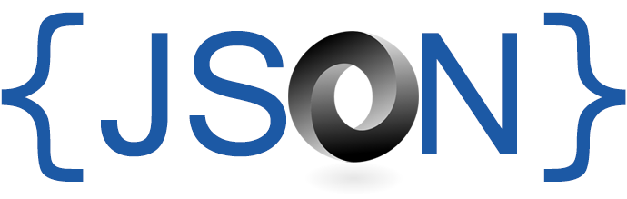
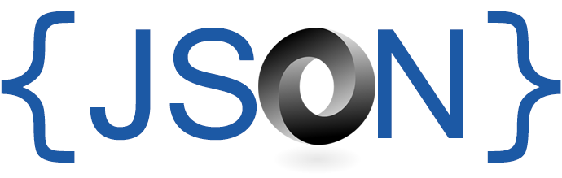
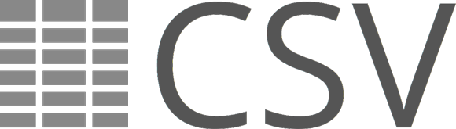
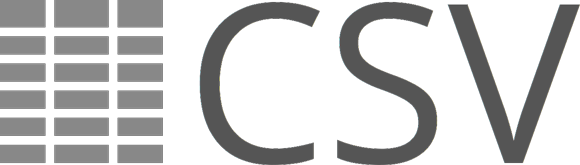

|
PROGRAMMING
Every project that I work on, every challenge that I face, I overcome. I am able to learn whatever technology stack is required to fix problems, and I am looking forward to learning even more.
I have been constantly employed for over 13 years in financial and information technology.
I enjoy working on projects with a team that cares about creating quality, maintainable code. But, if a team is not as good as they should be, I do the brave thing and make practical recommendations. That's why clients love me, because I do whatever is necessary for a project to succeed.
I have both practical (technical) and theory (insight). I have a substantial knowledge of computation theory, computation complexity and the history and evolution of computers as we know it, and where the computing industry is heading into the future.
Resume
KEY TECHNOLOGIES


 

 



BEST PRACTICES
- PEP8: Style Guide for Python Code.
- Google Python Style Guide.
- PEP20: The Zen of Python.
- DRY principle.
- KISS principle.
- YAGNI principle.
- Principle of least astonishment.
- Clean Code: A Handbook of Agile Software Craftsmanship.
PYTHON
- Python code maximum line length is 100 characters.
- Preferred order of attributes inside a class: NAMED_CONSTANTS, class data attributes, __init__() if present, __magic_methods__(), @properties, @staticmethods, @classmethods, _private methods, public methods. Related private and public methods should be placed together for better readability.
- When overriding a method always call an overridden parent class method (with super) and return its result (if you are not altering it) even if the overridden method is not supposed to return anything then None at the moment (it is a forward compatibility measure).
- Usage of introspection (e.g. getattr(), hasattr()) and __magic_methods__ override should be well-considered. If a feature can be implemented without introspection or explicit __magic_methods__ it should implemented with out them for very rare exceptions. Usage of introspection or explicit __magic_methods__ usually is a sign of bad code design or "reinvention of the wheel".
- Use strict version dependencies to prevent unexpected upgrades. Apply the same rule to the dependencies of your dependencies recursively. Example: dependency-package-name==x.y.z (explanation).
- Use Python packaging instead of requirements.txt and git-based deploys.
PROCESS
- Collective code ownership.
- Code review is a good investment of time.
- Favor code development performance against code run time performance (with a reasonable trade-off).
- Favor good enough code and code development performance against perfect code when you have tight deadlines. You can always improve later..
- It is fine to write an optimal code in the first place (in terms of size, performance or resource usage) if it comes at zero or near zero cost.
- Dedicate time on code run time performance optimization only if it is really needed. Premature optimization may result in waste of time.
- Every time you put a dirty hack or just something that can be done better into your code put a TODO near it with an explanation and/or description of actions for improvement. It will help to track technical debt and help other developers during refactoring or regular development to understand if they are right to judge this code as strange and to be improved.
- If it is hard to choose between alternative technical solutions, then choose any of them instead of wasting time. Later when you have more information or circumstances change you can refactor if the original choice was wrong.
- Using a language feature just to show others that you know it is unprofessional.
- Manage to see more lines at the screen at the same time for lesser defect count (vertical display orientation and meaningless lines elimination may help).
- Keep development environment as close as possible to production.
- Keep testing environment identical to production enviroment (including the deployment procedure).
- Never submit changes that are known to break something that already works.
CODE DESIGN
- Write code to be read by humans.
- Favor code readability against code run time performance (with a reasonable trade-off).
- Maintain code reuse of your code and use publicly available libaries. Reinventing a wheel is a waste of time.
- Avoid code copy and paste or have very strong reasons for it.
- Know the difference between agile and universal: instead of writing a code for all imaginary future use cases write the code that can be easily adapted to many of the future use cases.
- Maintain the least possible cyclomatic complexity of the code for better readability and lesser defect count.
- Favor a readable code against a well commented code. A necessity for comment is good sign for a poorly written code.
- Code run time performance optimization should start from identified bottlenecks instead of something that is easy to tune.
- If a literal used twice in the code put it to a named constant. Even literals that occur only once deserve to be put in a named constant, because named constant will describe the nature of the constant.
- Do not put .gitignore into git repository. Every developer should be free to ignore whatever extra file he/she has locally (.gitignore should not aggregate every developer's local "mess").
CODE STYLE
- Maintain a shorter code size in lines and characters for better readability and lesser defect count if does not impact performance or readability.
- TODO format: TODO(author) LOW|MEDIUM|HIGH|CRITICAL: textual description of todo..
- A longer variable, function, class or method name is better than an unclear name.
- Code style should be consistent across the entire code base.
- Code base should not contain commented out source code. Although it may be a part of a comment or a TODO.
- Non-ASCII charcters should not be a part of the source code. Presence of such characters is a sign of poor localization, internationalization or parametrization of the code.
ORGANIZATION
- Every decision should be reasonable (based on reasons).
- Actual responsibility for a decision always lays on a person(s) made the decision despite how it looks or formalized.
- Every decision should be considered in every longevity term (short, medium and long).
- Every technical decision should be made considering its effect on business as the most important criteria.
- Technical solutions of a highest efficiency (= effect / expenses) should chosen during decision making process.
- Honor established processes, rules, methodologies and patterns, but do not hesitate to step out if it leads to more profit than loss.
|